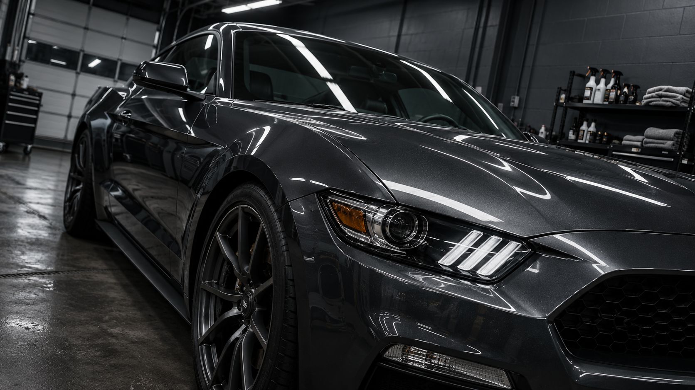
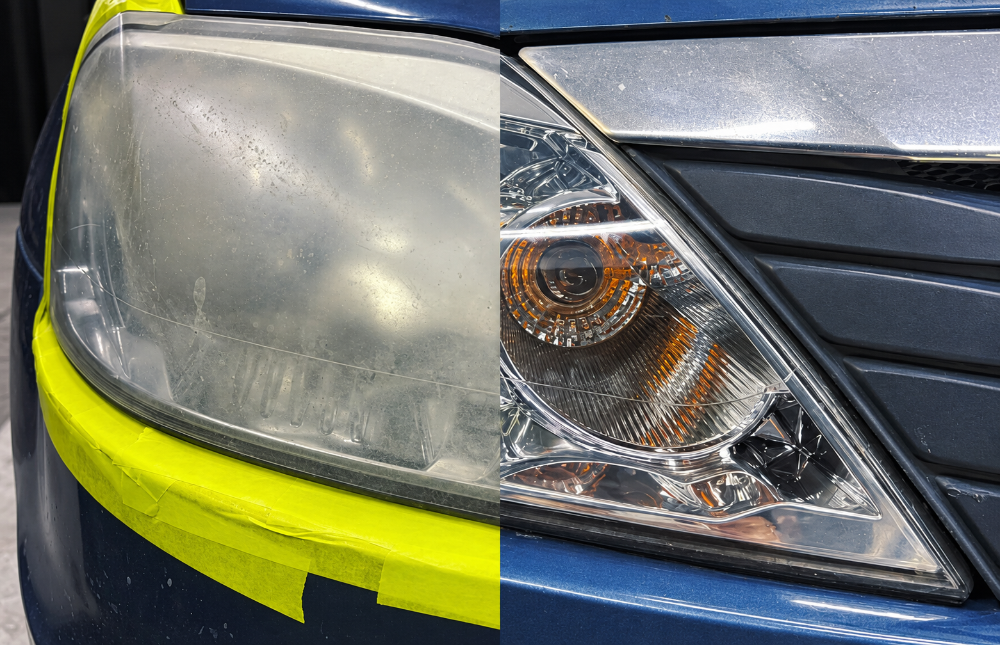
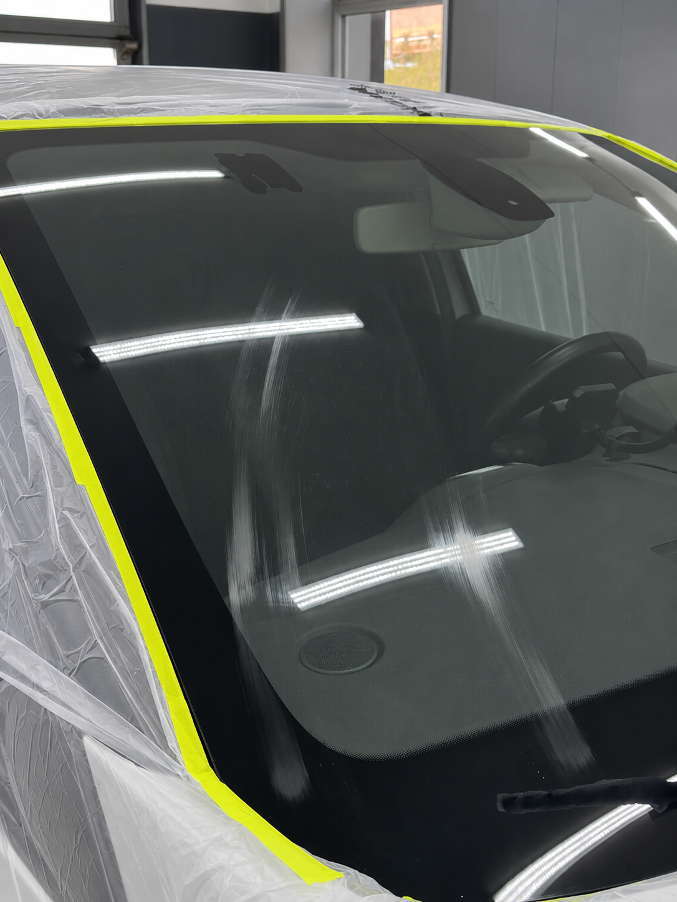
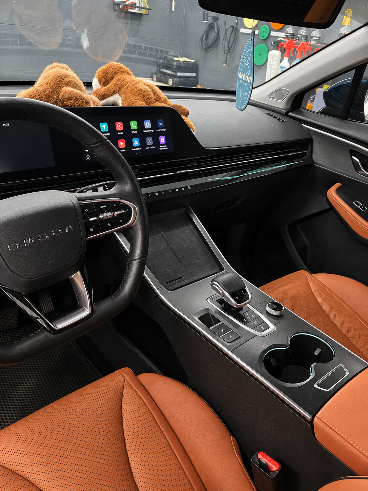
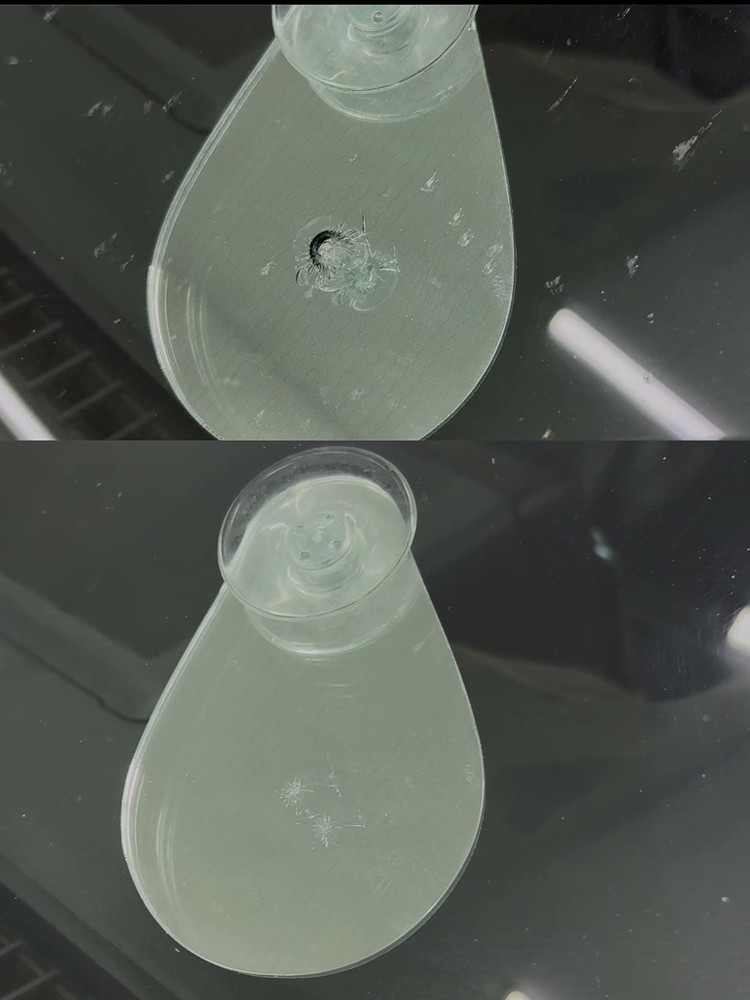
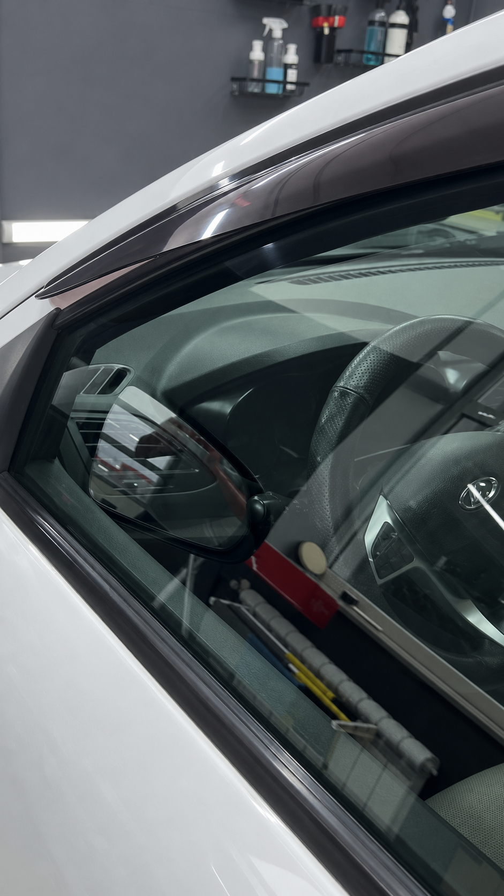
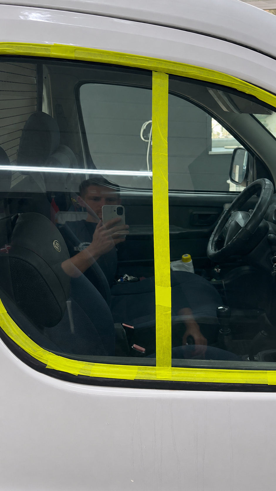

Реставрация
автостекла в Липецке
Полировка стекла, ремонт сколов и восстановление фар.

Восстановление
и защита фар
Полировка фар и фонарей. Защита полиуретановой плёнкой.

Ремонт сколов
и трещин
Оценка повреждения и восстановление автомобильного стекла.

Химчистка
салона
Полная очистка салона или уход за отдельными зонами.
// Услуги
Все услугиПолировка фар

Ремонт сколов

Антидождь

Удаление водного камня
Химчистка салона
Узнать стоимость
работы
Написать в Telegram // Отзывы
«Оптика как новая, затянули в пленку».
Полировка и защита фар
«Работой доволен».
Ремонт скола на стекле
«Хороший спокойный мастер, разговор конкретно и по делу».
О работе мастера
Отзывы на Яндексе
 Открытие студии · 8 мая 2026
Открытие студии · 8 мая 2026О студии
DETROIT — студия реставрации автомобильного стекла в Липецке. Полировка и шлифовка, сколы и трещины, восстановление оптики. А ещё — защитные покрытия и химчистка салона.
Принимаем на Баумана, 212. Работаем и с выездом: возможность и условия обсудите с мастером.
О студии// Ответы на вопросы
Все вопросыСколько стоит работа?
Стоимость зависит от повреждения, состояния поверхности и объёма работ. Уточните её у мастера после оценки — единых цен для всех случаев на сайте нет.
Можно сохранить оригинальное стекло?
В каталоге есть такие работы, например Renault Kaptur. Но решение зависит от конкретного повреждения: сначала нужна оценка.
Можно вызвать мастера?
Да, студия работает с выездом. Адрес, условия и возможность выполнить вашу задачу на месте нужно согласовать заранее.
Делаете химчистку отдельных зон?
Да. В DETROIT есть полная и частичная химчистка, работа с багажником и кабинами техники. Состав заказа обсуждается отдельно.
// Наши работы
Все работы// Контакты
Время работыЕжедневно
Ежедневно
09:00–21:00
Приём в студии и выезд.
Условия выезда уточните у мастера.